01
No forced login
First-time customers can place an order without creating an account first.
Why it matters
Less friction for local bakery orders where speed and trust are more important than account management.
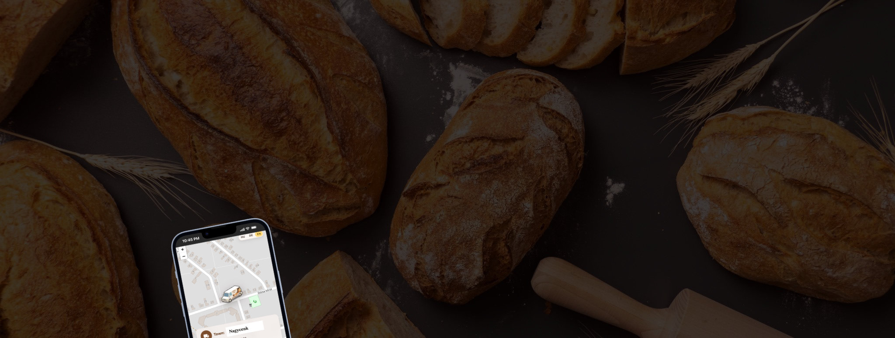
How I turned a real-world community pain point into a working field-operations MVP with live GPS tracking, stock visibility, driver access, and AI-assisted development.
The Spark
A mobile bakery van is a loved local service — but customers often only knew it was nearby when they heard the siren. They could not see the van’s exact location, check whether their favorite products were still available, or know when it would arrive.
The goal was not to create a “pretty website.” It was to design a practical system that helps the business operate more efficiently and gives the community timely, useful information.
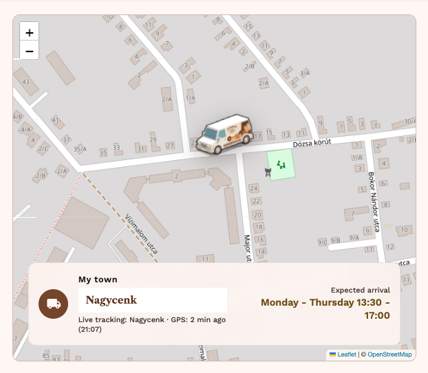
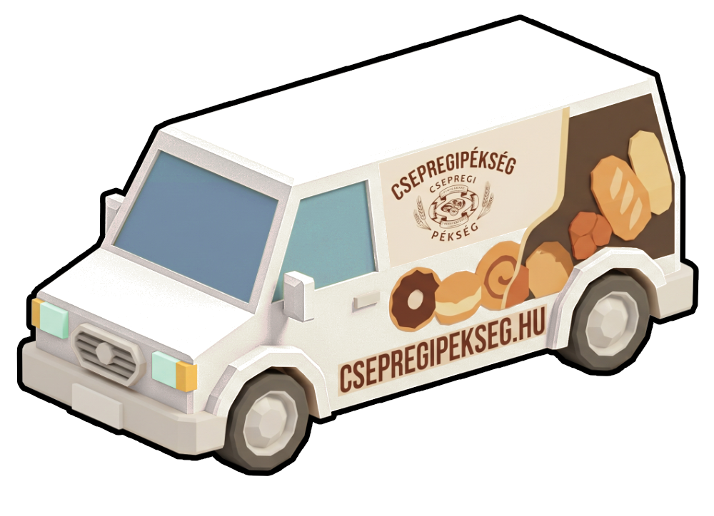
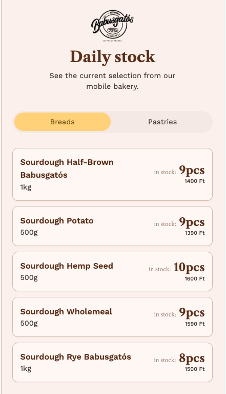
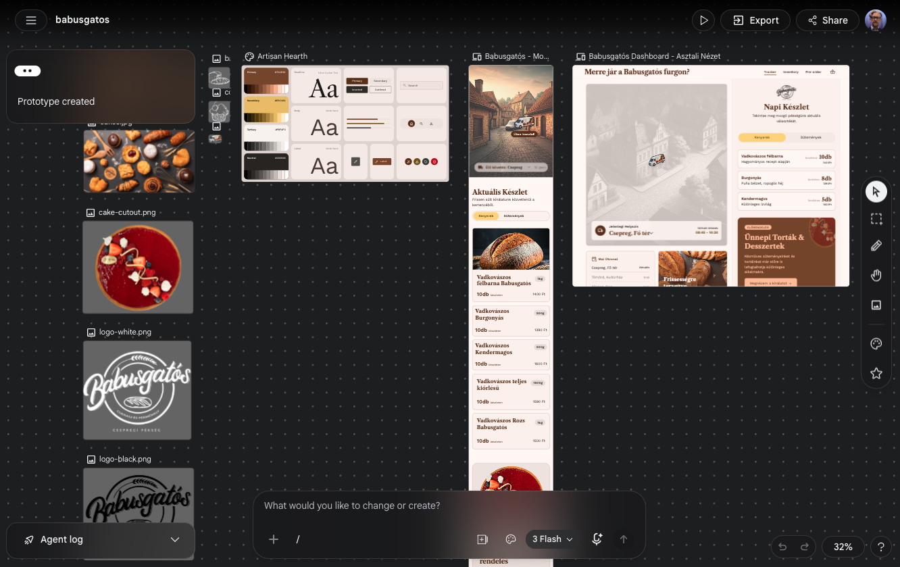
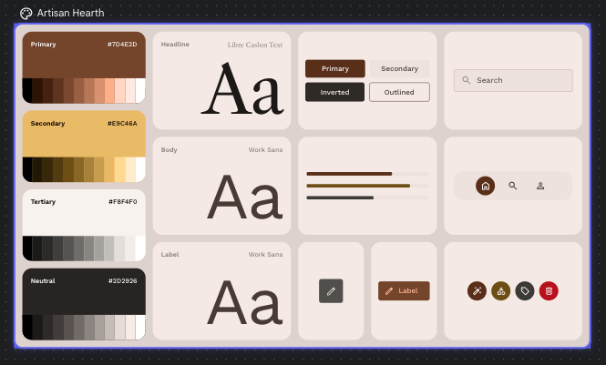
Designer as Builder
Google Stitch, MCP, and Cursor helped me move from product idea to production-ready interface much faster than a traditional handoff process.
But the important part was not simply generating screens. AI can accelerate visual output, but it does not solve architecture, state, edge cases, or system integration. The real work was turning static UI output into a working product with live data, driver workflows, push notifications, and production-safe implementation discipline.
AI accelerates the surface. Product judgment, architecture, and edge cases still need a builder who owns the system.
For Engineering Leads
Production decisions designed for real field conditions — not just demo-day polish.
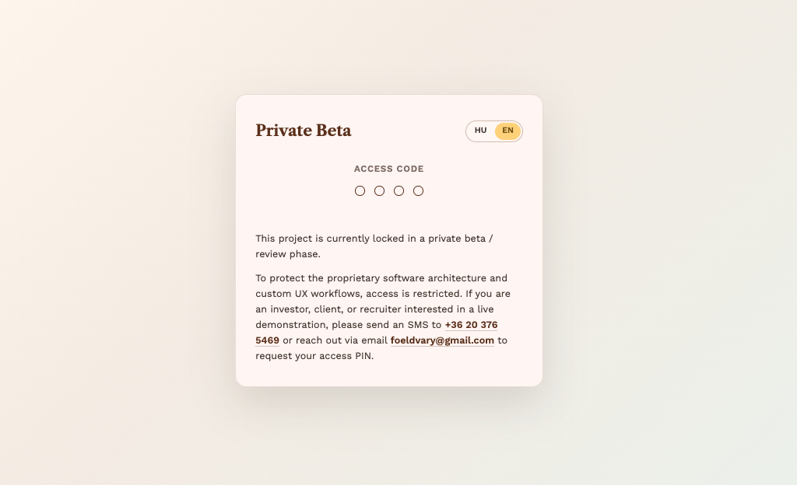
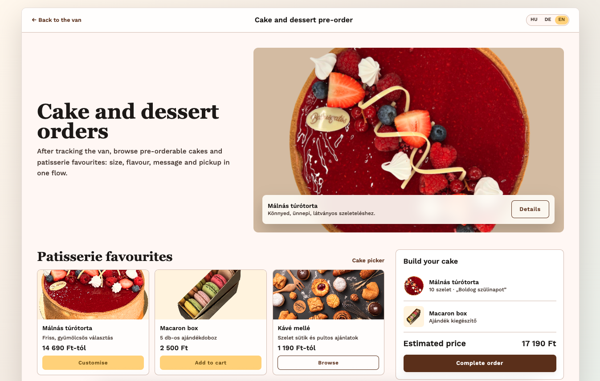


Guided Configuration
A playful step-by-step flow for building a custom cake before checkout.
Cake Creator turns custom cake ordering from a static form into a guided configuration flow.
Customers choose size, flavor, coating and decorations step by step — while the preview and price update with every decision. The flow combines single-choice steps, multi-select add-ons, custom text, visual feedback and a final review before the configured cake enters the cart.
The goal was to make a complex custom order feel simple, playful and emotionally personal — without losing the structure needed for checkout and production.
Interface Evidence
A lightweight ordering flow that lets customers add products, adjust quantities, complete checkout and review their submitted order without unnecessary account friction.
Customers can browse pre-order products and keep the cart visible while adding items.
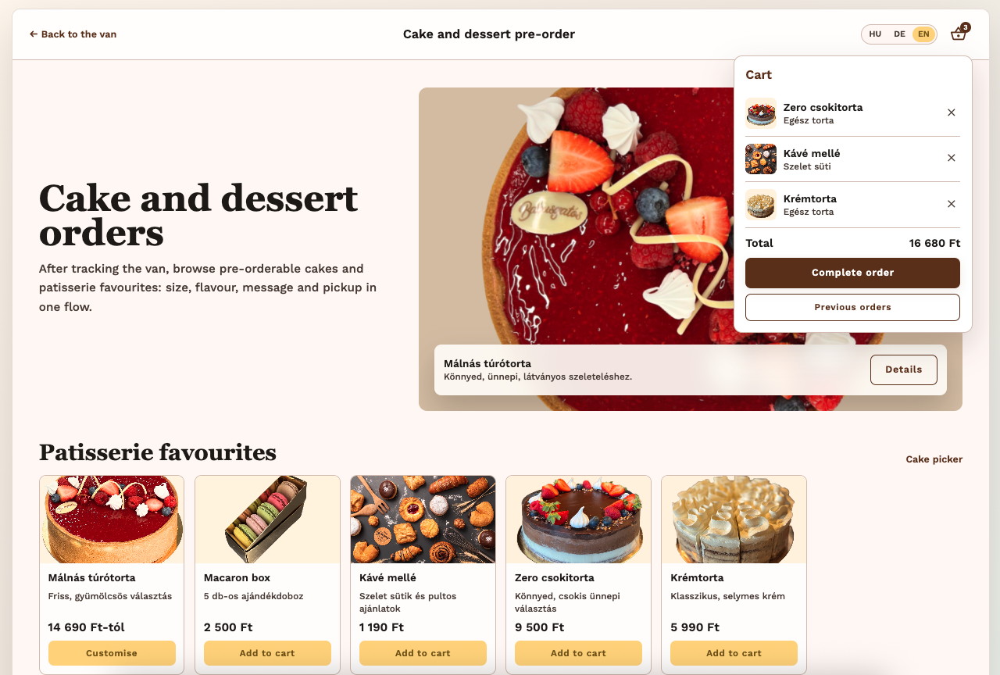
Quantities can be adjusted directly in the cart, while previous orders support repeat bakery purchases.
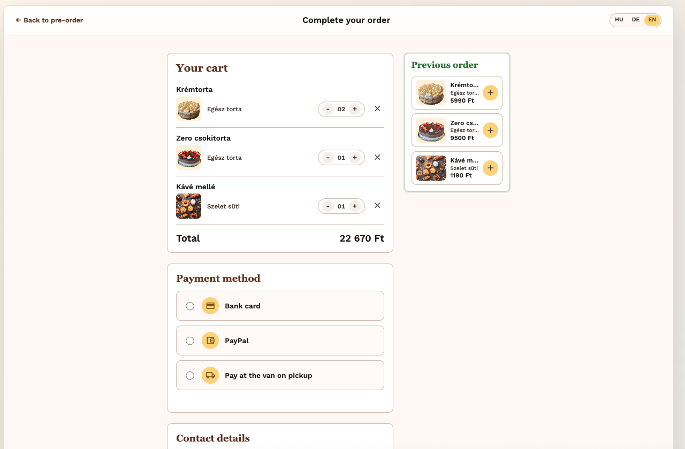
Checkout stays lightweight, while inline validation helps customers correct issues directly where they happen.
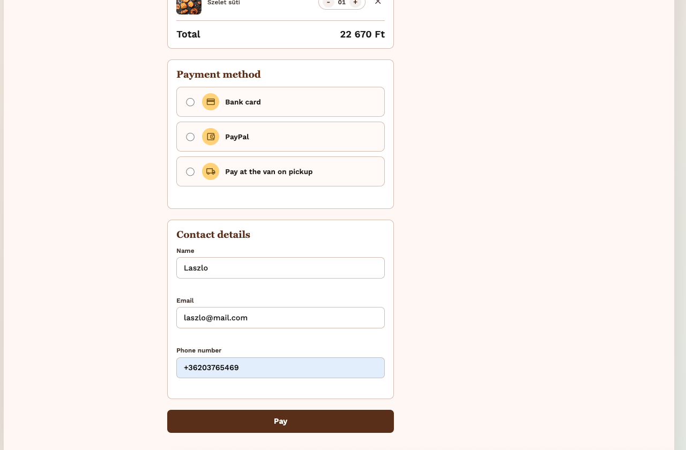
Validation state
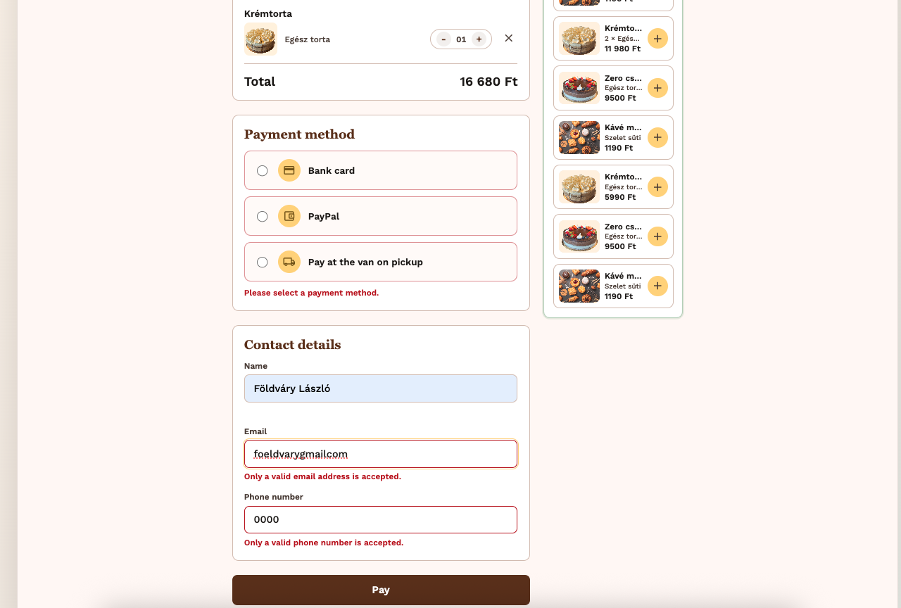
The flow ends with a clear confirmation that the order has been recorded.
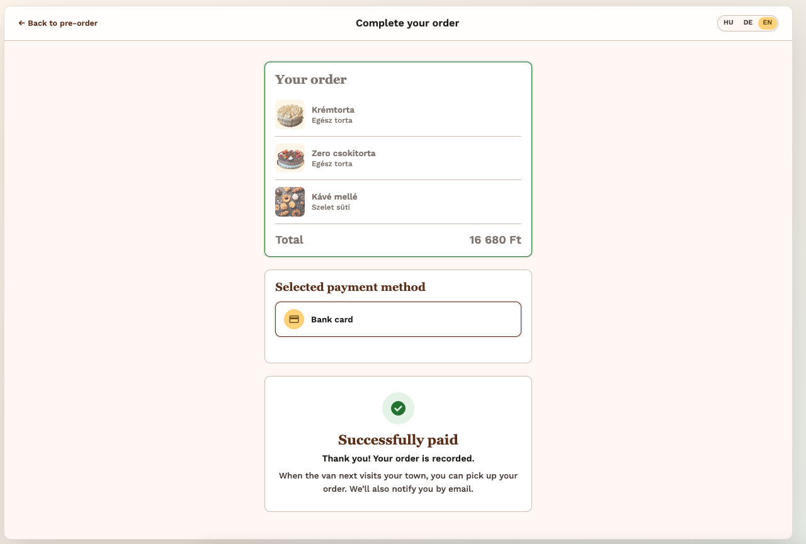
After completing the order, customers can return and review what they ordered instead of losing access to the order state.
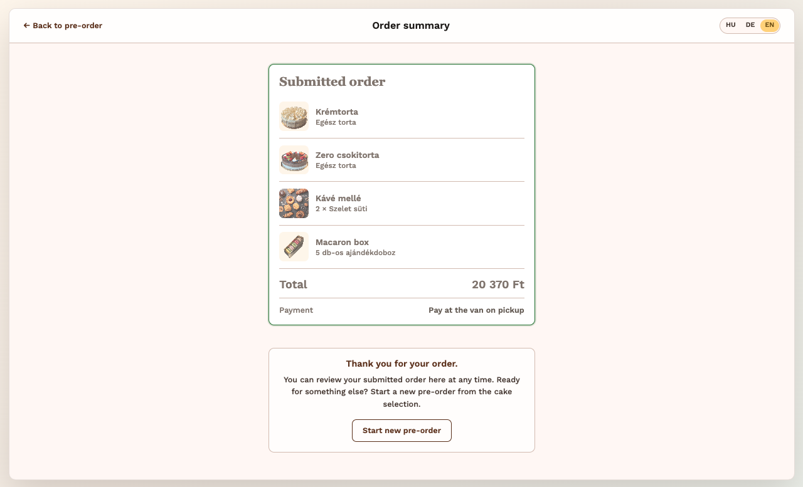
This reduces post-checkout uncertainty and gives customers confidence that their order was recorded correctly.
Results
~2,500
Lines of production UI code
3
Languages across UI + push
€0
Initial MVP hosting cost
HU / DE / EN supported across the interface and push notifications. Powered by Vercel Serverless and Google Apps Script.
Product Demos
Four focused screen recordings — one flow at a time, from the working live app.
01 · GPS
The van’s live position is shown alongside the actual route schedule, so customers can see where it is and when it is expected to arrive.
02 · Notification
Customers can subscribe with one tap. When the van enters their town, they receive a push notification — without installing an app or manually refreshing the page.
03 · Product List
Product names and stock data are edited directly in a Google Drive spreadsheet. Changes sync to the live site without a custom admin panel or additional client training.
04 · Stock
From a PIN-protected driver page, sold items can be updated with simple plus/minus controls. The spreadsheet updates instantly, and public stock quantities change in real time.
This project shows how useful portfolio work can solve real problems: with product thinking, speed, restraint, and architecture that holds up outside the demo.